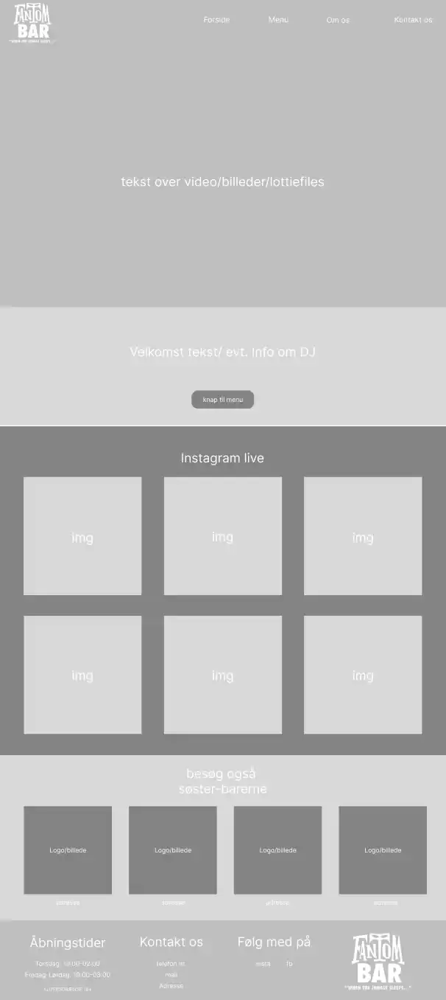

tema 5.2
At finde en virksomhed
I tema 5.2 skulle vi finde en virksomhed og re-designe deres
hjemmeside. Vi arbejdede i grupper og skulle tage kontakt til
virksomheden for at forstå deres behov og ønsker.
Ud over det visuelle design havde vi også fokus på UI og UX for at
sikre en god brugeroplevelse. Det krævede, at vi tænkte over
navigation, brugervenlighed og hvordan indholdet bedst kunne
præsenteres.
Som en del af opgaven besøgte vi virksomhedens lokationer for at
tage billeder og optage videoer, som vi senere brugte på den nye
hjemmeside.
Det originale site
Vi valgte at arbejde med Fantom Bar, en bar på Griffenfeldsgade med
fokus på cocktails og god musik. Deres originale hjemmeside var
simpel og indeholdte kun en side med deres logo, en lang tekst om
barens historie og en PDF-fil med menuen, som man skulle scrolle ned
for at finde.
Vi så hurtigt potentialet for at forbedre brugeroplevelsen ved at
gøre siden mere overskuelig og tilgængelig, især når det kom til
præsentation af menuen og barens unikke atmosfære.
Fra skitse til prototype
Sammen tegnede vi skitser af hvordan hjemmesiden skulle opstilles.
Da vi var enige om layoutet, arbejdede vi sammen på wireframes, som
hjalp os med at definere designet og fastlagde det i vores
styletile.
Da vi nåede til prototypen, begyndte vi at fordele rollerne, så hver
i gruppen tog ansvar for en side. Det gav os mulighed for at arbejde
effektivt, samtidig med at vi holdt fast i den fælles vision for
designet og hjalp hinanden hele vejen igennem.
